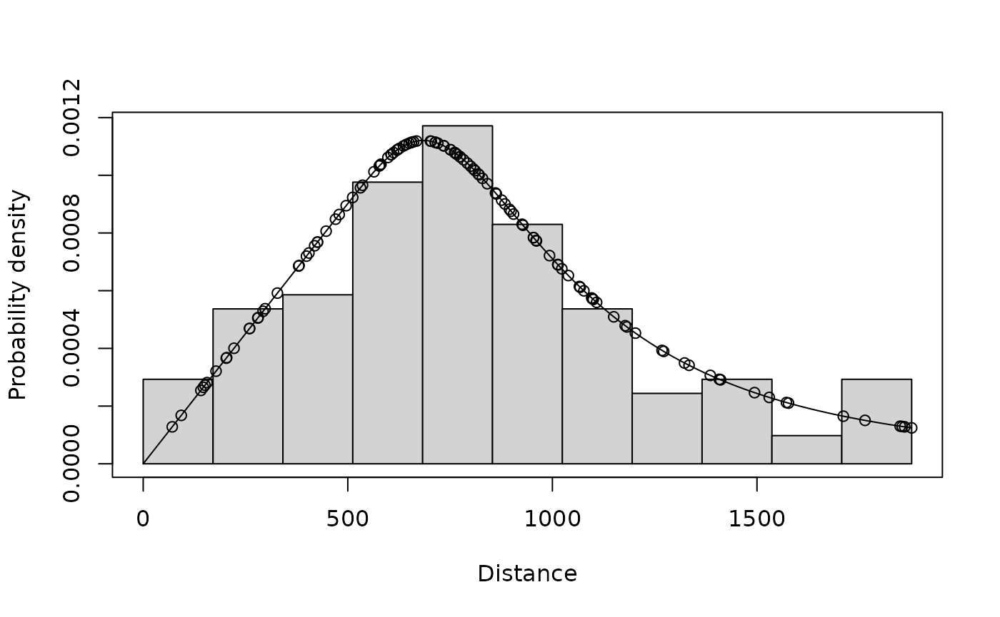
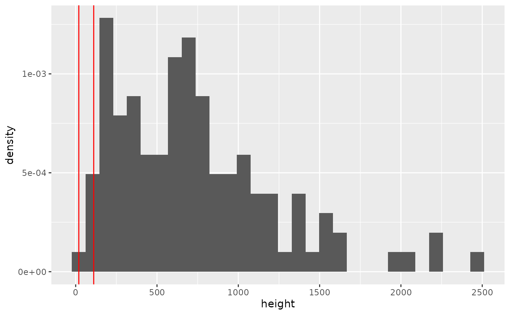

library(knitr)
library(collision)
library(ggplot2)
# for easy summarising and joins
library(data.table)
# for distance modelling
library(Distance)
#> Loading required package: mrds
#> This is mrds 3.0.1
#> Built: R 4.5.0; ; 2025-07-06 04:17:12 UTC; unix
#>
#> Attaching package: 'Distance'
#> The following object is masked from 'package:mrds':
#>
#> create.binsDeterministic Example
This is a good example to start with. It models a (fictional) site with 2 proposed turbines, all of the same model, and a (fictional) point count survey of Wedge-tailed Eagle. For this example we assume flight density is constant across the site.
We are going to calculate a simple deterministic model output here. For a stochastic output see the other examples.
Setup inputs
Define turbine model
Step one is to set up a turbine - here’s an example based on a Vestas
90, set up using the define_turbine function:
v90_single <- define_turbine(
model_id = "Vesta V90",
blade_length = 44,
blade_thickness_narrow = 0.07,
blade_thickness_wide = 2.6,
d_base = 4.15,
d_rotormin = 3.55,
d_top = 2.55,
hh = 65,
max_chord = 3.51,
min_chord = 0.39,
max_nac_h = 4.05,
max_nac_l = 13.25,
max_width_nacelle = 3.6,
rpm = 16.1,
rotor_diam = NULL,
tilt_deg = 6,
prop_operational = 0.98
)Define bird
Now we need a bird (see define_bird)
wte <- define_bird(
species = "Wedge-tailed Eagle",
bird_length = 0.945,
bird_speed = 17,
prop_day = 0.5,
prop_year = 1,
avoidance_dynamic = 0.90,
avoidance_static = 0.9999
)Define a set of turbines
The basic template for the model outputs is a data.frame
of turbine inputs. These can be read in from a csv, or you can set them
up with a few basic pieces of information and the turbine definition
above.
For each turbine we need a turbine ID, and a location. Location can be NA if you are not including any spatial modelling.
make_turbine_set creates the data.frame of turbine
inputs, sampled (if needed) and ready for analysis
df_turbines <- data.frame(
turbine_id = c("T01", "T02"),
lat = c(-32.512, -32.521),
lon = c(143.441, 143.442)
)Survey, observation and detection radius
Use the provided survey data to fit a (very simple) distance model. NOTE Please see Distance and the references therein for a complete primer on doing and interpreting Distance analysis.
The package observations dataset:
summary(df_obs)
#> distance size type height
#> Min. : 71.0 Min. :1.0 Length:120 Min. : 43.0
#> 1st Qu.: 534.8 1st Qu.:1.0 Class :character 1st Qu.: 328.0
#> Median : 763.0 Median :1.0 Mode :character Median : 662.0
#> Mean : 805.4 Mean :1.3 Mean : 730.5
#> 3rd Qu.:1027.0 3rd Qu.:2.0 3rd Qu.: 986.2
#> Max. :1878.0 Max. :2.0 Max. :2469.0
#> survey_id object
#> Min. : 1.00 Min. : 1.00
#> 1st Qu.: 29.75 1st Qu.: 30.75
#> Median : 60.00 Median : 60.50
#> Mean : 53.91 Mean : 60.50
#> 3rd Qu.: 78.00 3rd Qu.: 90.25
#> Max. :100.00 Max. :120.00is a dataset of 120 observations from 100 point count surveys,
including the count (size) of raptors (and associated
distance at first observation (distance)).
And the package survey dataset:
summary(df_survey)
#> survey_id survey_duration survey_type
#> Min. : 1.00 Min. :45 Length:100
#> 1st Qu.: 25.75 1st Qu.:45 Class :character
#> Median : 50.50 Median :45 Mode :character
#> Mean : 50.50 Mean :45
#> 3rd Qu.: 75.25 3rd Qu.:45
#> Max. :100.00 Max. :45is a dataset of the metadata for the 100 point count surveys, including the duration of each survey.
It’s very important that the field data include any surveys with no sightings as well as positive detections.
Between the two of them these tables must include:
- Distance to the bird at first sighting in metres. If transect sampling, this is usually the perpendicular (right-angle) distance from the transect line.
- Duration of the surveys in minutes
- Count of individuals in each survey (
size)
We fit a distance model and extract the effective detection radius (EDR). The effective detection radius is the radius of a circle, such that if 100% of flights were observed within this circle, the expected number of flights detected is the same as for the actual survey (which has decaying detectability with distance).
ds_model <- ds(
data = df_obs,
truncation = max(df_obs$distance, na.rm=TRUE),
transect = "point",
formula = ~1,
key = "hr",
dht_group = TRUE,
nadj = 0
)
#> Fitting hazard-rate key function
#> AIC= 1772.74
#> No survey area information supplied, only estimating detection function.
plot(ds_model, pdf=TRUE)
print(edr_from_distmodel(ds_model)) # in metres
#> [1] 1052.974
print(w_from_distmodel(ds_model)) # truncation distance / max distance in m
#> [1] 1878Calculate proportion at height and below height
prop_at_height is either a single value or distribution
information which represents the proportion of flights at rotor swept
height while prop_below_height is the proportion of flights
below rotor swept height.
A simple, single value example of this is given below
# rotor_diam / 2 is better than using blade length because it
# includes the nacelle size
min_rsh <- v90_single$hh - v90_single$rotor_diam * 0.5
max_rsh <- v90_single$hh + v90_single$rotor_diam * 0.5
## Review the heights
ggplot(data = as.data.frame(df_obs),
aes(x = height, y = after_stat(density))) +
geom_histogram() +
geom_vline(xintercept = min_rsh, colour = "red") +
geom_vline(xintercept = max_rsh, colour = "red")
#> `stat_bin()` using `bins = 30`. Pick better value `binwidth`.
# calculate ecdf (empirical cumulative distribution function)
# Note - this is a simple example; it's up to the analyst how best to
## fit the height distribution
cdf_height <- ecdf(df_obs$height)
prop_at_height <- cdf_height(round(max_rsh)) - cdf_height(round(min_rsh))
prop_below_height <- cdf_height(round(min_rsh))- Proportion at height: 0.0333333
- Proportion below height: 0
- Proportion above height: 0.9666667
Modelling
For a deterministic model, we need the following 4 steps:
- Step 1 - Run
encounter_rate()- calculate the uncorrected flights per survey minute. - Step 2 - Run
obs_flux(),turbine_flux()andflux_per_year()- calculate flux through turbine per year. This can also be done in one step usingturbine_flux_year(). - Step 3 - Run
prob_collision_static()andprob_collision_dynamic()- calculate for one interaction - Step 4 - Run
n_collisions()- calculate number of collisions a year
Step 1 - Encounter rate
This is where we determine the average encounter rate per unit time of survey. That is the average number of individuals observed in each minute of survey (or whatever unit of time you wish to use). This is basically just , however the function also allows for weighting surveys to account for stratification and can apply the Wilson correction (Wilson 1927) if there were no observations. The Wilson correction is an estimate of the encounter rate (mid-point of the 95% CI) that could result in zero observations.
This function takes as input a df_obs_summary
data.frame. This object has one row per survey and must contain a column
named survey_duration and a column named size
which is the total number of individuals observed in
each survey (not observation). Optionally, it can
contain a column named survey_weight which has the
associated relative weights of each survey (to avoid artificially
inflating or deflating the encounter rate
sum(survey_weight) must equal the number of surveys).
First let’s make that table (using data.table):
dt_obs <- copy(df_obs)
dt_survey <- copy(df_survey)
setDT(dt_obs)
setDT(dt_survey)
dt_obs_survey <- dt_obs[, .("size" = sum(size)), survey_id][dt_survey,
on = "survey_id"]
# need sum(size) because we want one row per survey (not observation)Now we can use this table in encounter_rate():
flights_per_min <- encounter_rate(
df_obs_summary = dt_obs_survey,
wilson_correction = TRUE # Default
)
#> Warning in encounter_rate(df_obs_summary = dt_obs_survey, wilson_correction =
#> TRUE): NA observations detected - NA observation size will be assumed to be 0Any surveys with NA observations are assumed to have
zero observations, which, if you left join to the survey table by
survey_id, should be correct. The average number of
movements observed per minute of survey is 0.0346667 flights per
minute.
Step 2 - Flux through turbine
This is where we account for
- The flight heights (
mean_flight_height) - The observer’s detection model (
eff_detection_widthobtained usingedr_dist_model()) - The size of the turbine (contained in the object made using
define_turbine()) - The proportion of the day active (contained in the object made using
define_bird()) - The proportion of the year active (contained in the object made
using
define_bird())
We first calculate the observed flux through a vertical airspace. This is in flights per unit time per unit area, in this example the units are minutes and metres squared, respectively.
Second we apply this to the “turbine plane” (a rectangular “doorway”
defined by the rotor diameter and maximum rotor swept height) using
turbine_flights() to obtain the flights through the turbine
plane per minute.
# flights / m / min
obs_flux_min <- obs_flux(
encounter_rate = flights_per_min, # numeric per min
eff_detection_width = 2.0*edr_from_distmodel(ds_model),
mean_flight_height = mean(df_obs$height*df_obs$size) # weighted by individuals
)
#flights through turbine / min
turbine_flights_min <- turbine_flights(
obs_flux = obs_flux_min,
rotor_diameter = v90_single$rotor_diam,
hub_height = v90_single$hh
)The observed flight flux is 8.7283936^{-9} flights per square metre per minute. Scaling up to the turbine this corresponds to 8.8586911^{-5} flights through the turbine area per minute.
Here we correct it for daily and monthly variability. This can be done by hand but the package includes a helper function which can scale to a year.
turbine_flight_year <- flights_per_year(
flights_per_time = turbine_flights_min,
time_units = "min",
prop_day = wte$prop_day, # diurnal
prop_year = wte$prop_year # present all year
)- The units for
turbine_flight_yearis flights / year (per turbine). - We expect 23.2965859 flights through the turbine area each year.
Step 3 - Probability of collision given interaction
Our approach considers both the static () and dynamic components ()
Without avoidance, and isolated from the overall collision rate calculation, the total probability of collision, given interaction is the
because the two options are mutually exclusive.
Let’s calculate the collision probability for a Wedge-tailed Eagle and the V90 turbine model.
df_turbines$p_coll_static <- prob_collision_static(
d_base = v90_single$d_base,
d_rotormin = v90_single$d_rotormin,
d_top = v90_single$d_top,
hh = v90_single$hh,
blade_length = v90_single$blade_length,
max_nac_h = v90_single$max_nac_h,
max_nac_l = v90_single$max_nac_l,
max_width_nacelle = v90_single$max_width_nacelle,
rotor_diam = v90_single$rotor_diam,
tilt_deg = v90_single$tilt_deg,
max_chord = v90_single$max_chord,
min_chord = v90_single$min_chord,
blade_thickness_wide = v90_single$blade_thickness_wide,
blade_thickness_narrow = v90_single$blade_thickness_narrow,
prop_at_height = prop_at_height,
prop_below_height = prop_below_height
)
df_turbines$p_coll_dyn <- prob_collision_dynamic(
rpm = v90_single$rpm,
blade_length = v90_single$blade_length,
max_width_nacelle = v90_single$max_width_nacelle,
rotor_diam = v90_single$rotor_diam,
blade_thickness_wide = v90_single$blade_thickness_wide,
blade_thickness_narrow = v90_single$blade_thickness_narrow,
hh = v90_single$hh,
bird_length = wte$bird_length,
bird_speed = wte$bird_speed,
prop_at_height = prop_at_height,
prop_below_height = prop_below_height
)Step 4 - Total annual collisions (with avoidance)
Now using the calculated yearly interactions (flights through the turbine area) and probability of collision given interaction as well as the expected avoidance rates, we can obtain an estimate of the total number of expected collision per year.
df_turbines$n_collision <- n_collision(
avoidance_rate_static = wte$avoidance_static,
avoidance_rate_dynamic = wte$avoidance_dynamic,
n_flights = turbine_flight_year,
p_coll_static = df_turbines$p_coll_static,
p_coll_dynamic = df_turbines$p_coll_dyn
)
## For a final result, sum all turbines
sum(df_turbines$n_collision)
#> [1] 0.2689028